Find amazing recipes that are tasty and incredibly easy to cook!
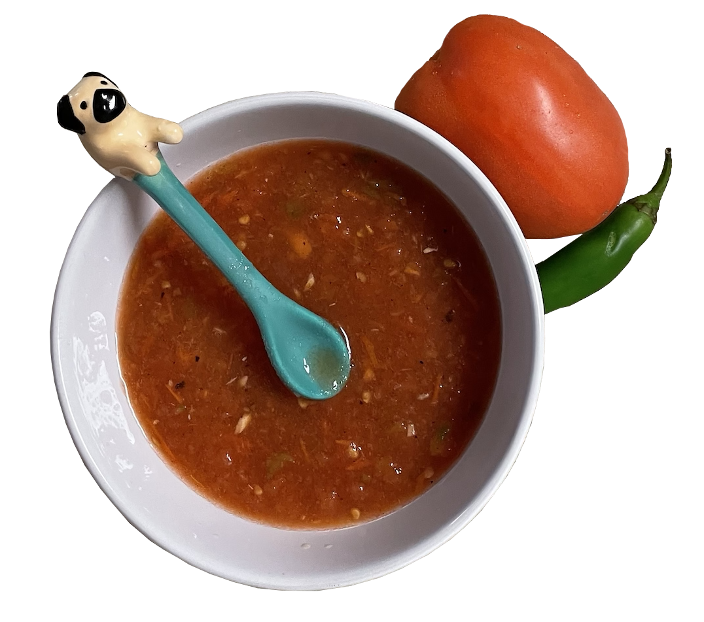
Red mid-spicy salsa
Cooking Time: 5 min
Ingredients:
3 tomatoes
2 tbsp salt
1 serrano pepper
2 garlic cloves
Wash the tomatoes and the serrano pepper with plenty of water.
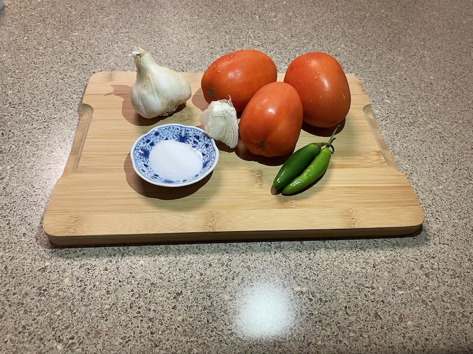
Cut in half the tomatoes and grill them on a pan until they become very soft. Do the same with the serrano pepper. You can use a piece of foil to protect the pan like shown in the picture.
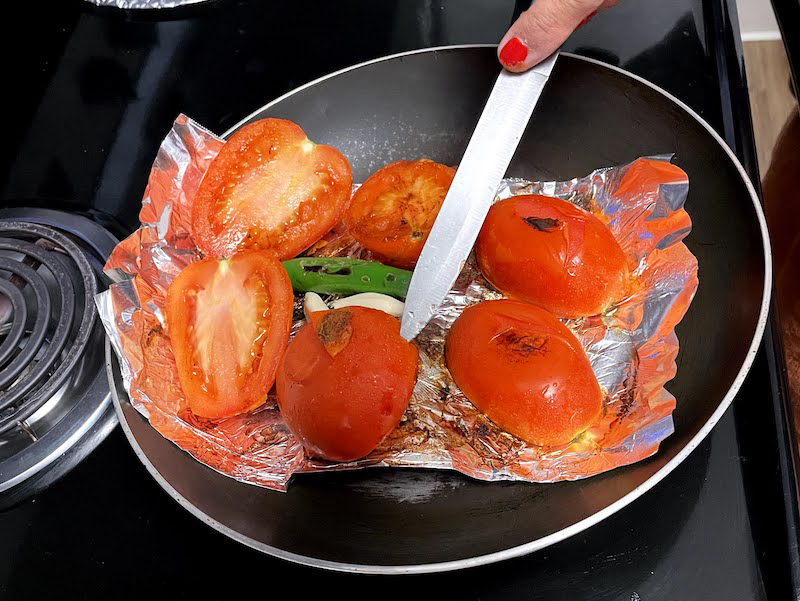
Use the blender to grind the grill tomatoes, serrano pepper, garlic, and onion. Feel free to add salt.
Continuous blending the mix until you get a nice deep texture. Don't forget to taste the salsa and see if it needs an extra pinch of salt. Enjoy your salsa with tortilla chips or anything you would like!
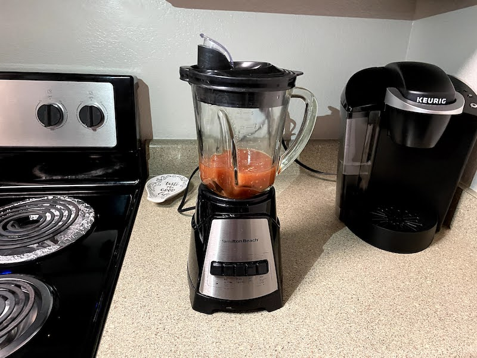
Gold corn totopo chips
Cooking Time: 10 min
Ingredients:
10 tortillas
1/4 cup of vegetable oil
1/2 tbsp salt
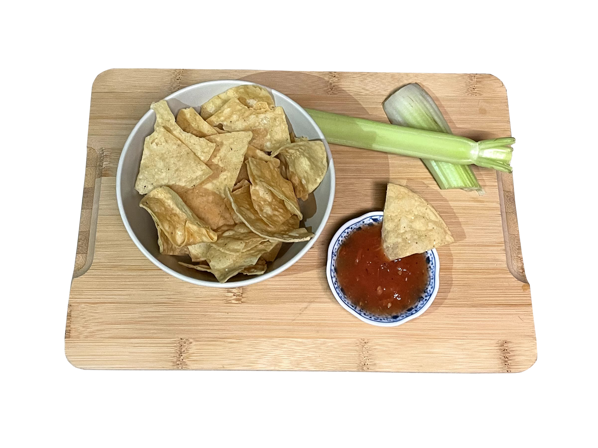
Cut the tortillas with a knife or by hand into 1.5 in pieces. I recommend cutting them in a triangle shape.
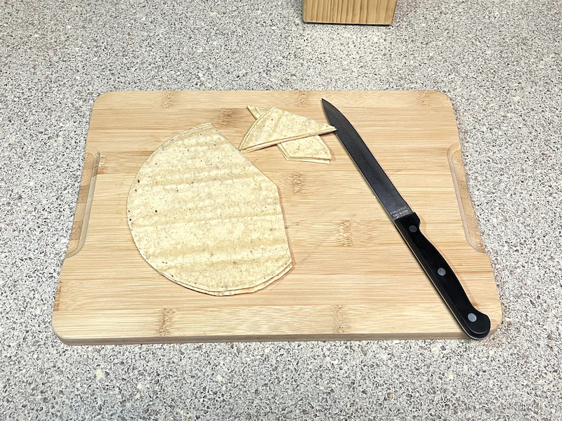
Pour the oil into a pan and bring it to high heat, add the tortilla triangles to the pan and fry them until getting a nice golden color (about 5 min).
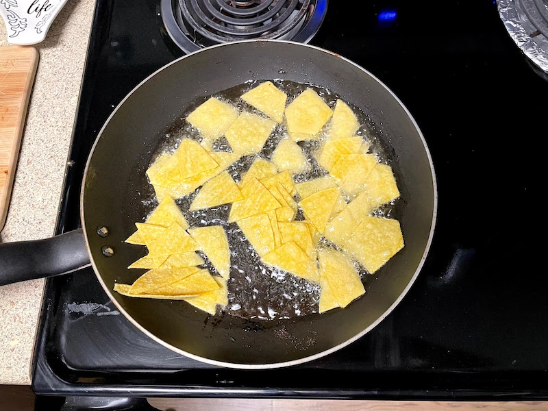
Remove the totopos from the pan and let them rest in a bowl with an absorbent towel to extract the extra oil.
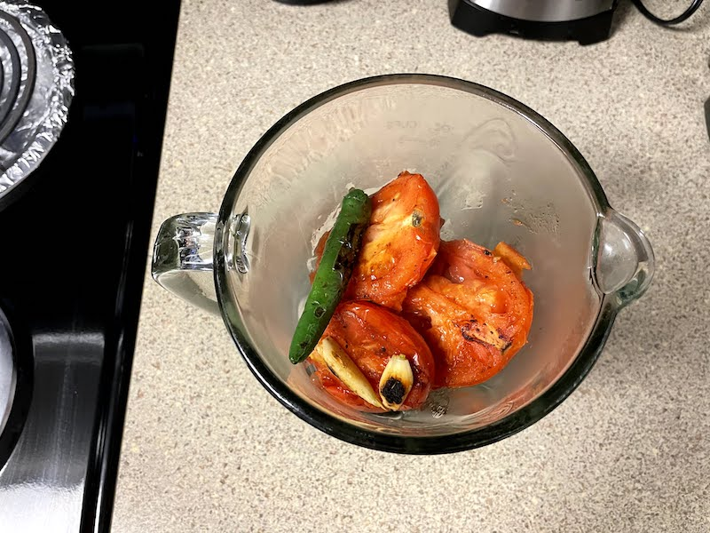
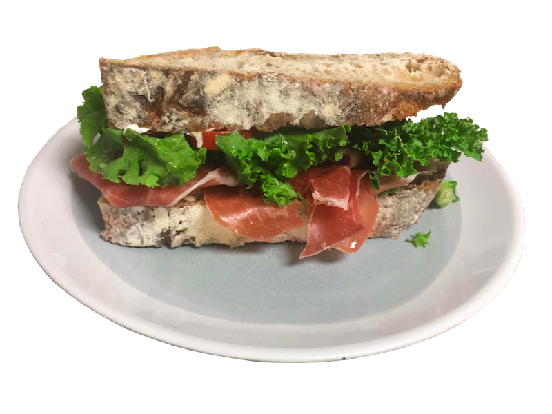
Prosciutto Sandwich Recipe
Cooking Time: 8 min
Ingredients:
2 slides of sour bread
2 slides prosciutto di parma
1 cabot clothbound cheddar cheese
3 red cherry tomatoes
2 tbsp cream cheese
1/2 cup kale salad
Chop the kale and slide the red cherry tomatoes.
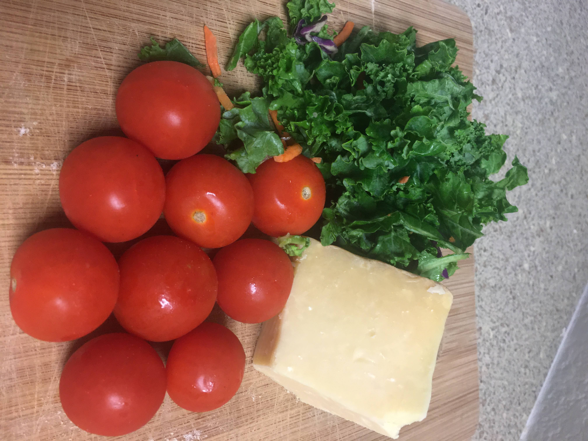
Spread the cream cheese on the bread surface and add the cherry tomatoes on top of it.
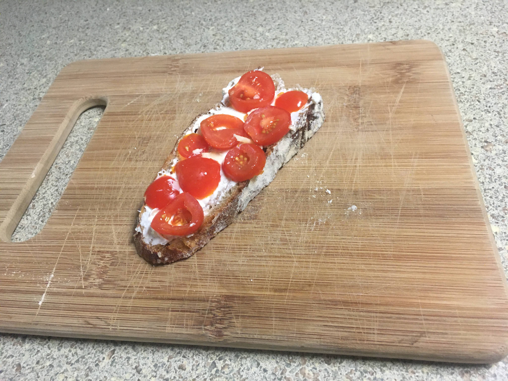
Place the cheese, the prosciutto, and the kale on the other piece of bread.